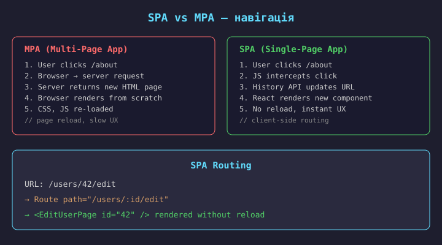
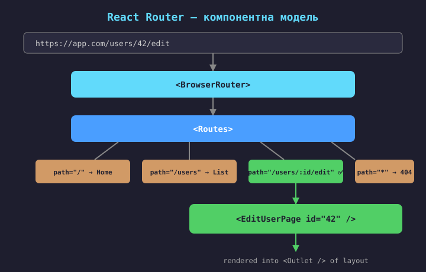
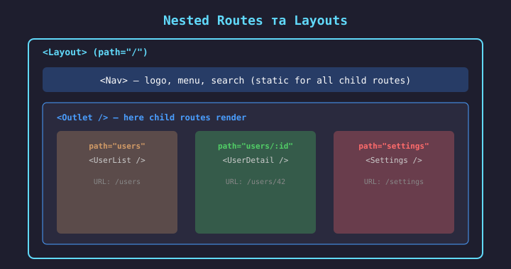
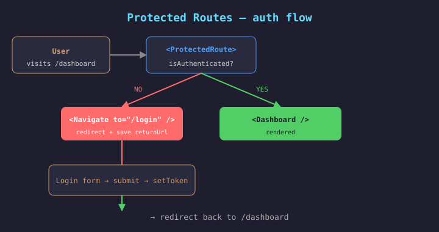
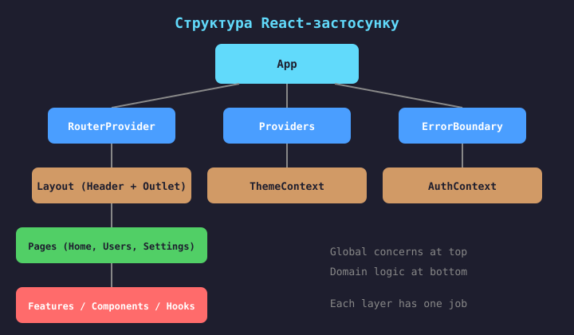

SPA (Single-Page Application) — застосунок завантажується один раз, далі навігація відбувається без перезавантаження сторінки.
Маршрутизація (routing) — механізм, що зіставляє URL-адресу з відповідним компонентом для відображення.
Як це працює:
pushState);React не має вбудованого роутера — використовується React Router (de-facto стандарт) або Next.js File-based routing.
// ❌ State в компоненті
const [page, setPage] = useState(1);
const [filter, setFilter] = useState("all");
const [tab, setTab] = useState("details");
// втрачається при reload, не ділиться
// ✅ State в URL (router) /products?page=2&filter=active /users/42?tab=details // shareable, bookmarkable, survives reload
Переваги URL-state:

React Router — декларативна маршрутизація через компоненти.
<BrowserRouter> — обгортає застосунок, використовує HTML5 History API;<Routes> — контейнер для списку маршрутів;<Route> — зіставляє URL-шлях з компонентом;<Link> — посилання без перезавантаження (renders <a>);<Outlet> — місце, де рендеряться дочірні маршрути (nested);<Navigate> — програмний редирект.Встановлення: npm install react-router-dom
Версія: React Router v6 (data API в v6.4+, loader/action в v7).
// JSX-стиль (декларативний)
import { BrowserRouter, Routes, Route, Link }
from "react-router-dom";
function App() {
return (
<BrowserRouter>
<nav>
<Link to="/">Home</Link>
<Link to="/users">Users</Link>
</nav>
<Routes>
<Route path="/" element={<Home />} />
<Route path="/users" element={<UserList />} />
<Route path="*" element={<NotFound />} />
</Routes>
</BrowserRouter>
);
}
// Data API стиль (v6.4+, рекомендований)
import { createBrowserRouter, RouterProvider }
from "react-router-dom";
const router = createBrowserRouter([
{ path: "/", element: <Home /> },
{ path: "/users", element: <UserList />,
loader: usersLoader // data fetching
},
{ path: "*", element: <NotFound /> },
]);
function App() {
return <RouterProvider router={router} />;
}
// Переваги data API:
// - loader/action для data fetching
// - error boundaries per route
// - prefetching на наведенні
// useParams — params з URL
function UserDetail() {
const { id } = useParams();
// URL: /users/42 → id="42"
const { data } = useUser(id);
}
// useSearchParams — query params
function ProductList() {
const [params, setParams]
= useSearchParams();
const page = params.get("page") ?? "1";
// URL: /products?page=3
}
// useNavigate — програмна навігація
function LoginForm() {
const navigate = useNavigate();
const handleSubmit = async () => {
await login(...);
navigate("/dashboard");
};
}
// <Link> — декларативна навігація
<Link to="/users">Users</Link>
<Link to={`/users/${id}`}>
View profile
</Link>
// renders <a href> without reload
// Конфігурація маршруту з параметром
<Route path="/users/:id"
element={<UserDetail />} />
// Отримання параметра в компоненті
import { useParams } from "react-router-dom";
function UserDetail() {
const { id } = useParams();
// URL: /users/42 → id = "42"
const { data, loading } =
useUser(id);
if (loading) return <Spinner />;
return <div>{data.name}</div>;
}
Route params — динамічні сегменти URL,
що стають доступні через useParams().
Синтаксис: :paramName в шляху.
Приклади:
/users/:id → /users/42/posts/:slug → /posts/hello-world/products/:category/:id → /products/electronics/5Optional params — через
? (React Router v6.4+):
/posts/:id? → /posts, /posts/42
import { useSearchParams } from "react-router-dom";
function ProductList() {
const [params, setParams] =
useSearchParams();
const page = parseInt(params.get("page") ?? "1");
const filter = params.get("filter") ?? "all";
const goToPage = (p: number) => {
setParams({ page: String(p), filter });
};
// URL: /products?page=3&filter=active
return (
<>
<Filter value={filter} />
<List page={page} />
<Pagination current={page} onPageChange={goToPage} />
</>
);
}
Query params — параметри після ? в URL.
Призначення:
?page=3);?category=books);?sort=price);?q=react);useSearchParams повертає
URLSearchParams-об'єкт + setter.
Зміна query → URL оновлюється, компонент перерендериться.
Перевага: стан фільтра в URL — bookmarkable + shareable.

// Layout-компонент з Outlet — місце для дочірніх маршрутів
function Layout() {
return (
<div>
<Header /> // спільний для всіх дочірніх сторінок
<Nav /> // спільна навігація
<main>
<Outlet /> // тут рендериться активний дочірній маршрут
</main>
<Footer /> // спільний футер
</div>
);
}
// Конфігурація з вкладеними маршрутами
<Routes>
<Route path="/" element={<Layout />}>
<Route index element={<Home />} /> // index — дефолтна сторінка ("/")
<Route path="users" element={<UserList />} />
<Route path="users/:id" element={<UserDetail />} />
<Route path="settings" element={<Settings />} />
</Route>
<Route path="/login" element={<Login />} /> // без Layout
<Route path="*" element={<NotFound />} />
</Routes>
Outlet — «слот» куди вставляється активний дочірній маршрут. index — сторінка за замовчуванням для батьківського шляху. Layout не перерендериться при зміні дочірнього маршруту.
// Кілька рівнів вкладеності
<Route path="/dashboard" element={<DashboardLayout />}>
<Route index element={<DashboardHome />} />
<Route path="users" element={<UsersLayout />}>
<Route index element={<UserList />} />
<Route path=":id" element={<UserDetail />} />
<Route path=":id/edit" element={<EditUser />} />
</Route>
<Route path="settings" element={<Settings />} />
</Route>
// URL → рендериться:
// /dashboard → Layout → DashboardHome
// /dashboard/users → Layout → UsersLayout → UserList
// /dashboard/users/42 → Layout → UsersLayout → UserDetail
// /dashboard/users/42/edit→ Layout → UsersLayout → EditUser
Переваги вкладених маршрутів:
Аналог у Vue Router — <router-view> + nested routes.

// components/ProtectedRoute.tsx
import { Navigate, useLocation } from "react-router-dom";
import { useAuth } from "../hooks/useAuth";
export function ProtectedRoute(
{ children }: { children: ReactNode }
) {
const { isAuthenticated } = useAuth();
const location = useLocation();
if (!isAuthenticated) {
// зберігаємо URL для повернення після login
return <Navigate to="/login"
state={ from: location } replace />;
}
return <>{children}</>;
}
// Використання в Routes
<Routes>
<Route path="/login" element={<Login />} />
<Route path="/dashboard" element={
<ProtectedRoute>
<DashboardLayout />
</ProtectedRoute>
}>
<Route index element={<DashboardHome />} />
<Route path="users" element={<UserList />} />
<Route path="settings" element={<Settings />} />
</Route>
</Routes>
// Після login — повернення на запитану сторінку
const location = useLocation();
const from = location.state?.from?.pathname || "/dashboard";
<Navigate to={from} replace />
Navigate replace — замінює запис в історії, щоб Back не повернув на /login. location.state — передаємо URL для повернення після login.
// ProtectedRoute з перевіркою ролі
export function ProtectedRoute({
children, roles = []
}: {
children: ReactNode;
roles?: string[]; // ["admin", "editor"]
}) {
const { user, isAuthenticated } = useAuth();
const location = useLocation();
if (!isAuthenticated)
return <Navigate to="/login" state={ from: location } replace />;
if (roles.length > 0 && !roles.includes(user.role))
return <Navigate to="/forbidden" replace />;
return <>{children}</>;
}
// Використання
<Route path="/admin" element={
<ProtectedRoute roles=["admin"]>
<AdminPanel />
</ProtectedRoute>
} />
// Без lazy — один бандл import Home from "./Home"; import Users from "./Users"; import Settings from "./Settings"; // all loaded upfront (~500KB)
// З lazy — split per route
const Home = lazy(() => import("./Home"));
const Users = lazy(() => import("./Users"));
const Settings = lazy(() => import("./Settings"));
// each loaded on demand (~50KB)
Suspense — fallback під час завантаження:
<Suspense fallback={<Spinner />}>
<Routes>...</Routes>
</Suspense>
// показує spinner поки chunk завантажується
import { lazy, Suspense } from "react";
import { BrowserRouter, Routes, Route }
from "react-router-dom";
// Lazy import — кожна сторінка окремий chunk
const Home = lazy(() => import("./pages/Home"));
const UserList = lazy(() => import("./pages/UserList"));
const Settings = lazy(() => import("./pages/Settings"));
function App() {
return (
<BrowserRouter>
<Suspense fallback={<PageLoader />}>
<Routes>
<Route path="/" element={<Home />} />
<Route path="/users" element={<UserList />} />
<Route path="/settings" element={<Settings />} />
</Routes>
</Suspense>
</BrowserRouter>
);
}
React.lazy — динамічний import, створює окремий JS-chunk.
Suspense — показує fallback під час завантаження chunk-а.
Переваги:
Важливо: Suspense обгортає
всі lazy-компоненти.
Vite/Webpack автоматично створюють chunks
для import().
// Catch-all маршрут — має бути останнім
<Routes>
<Route path="/" element={<Home />} />
<Route path="/users" element={<UserList />} />
<Route path="*" element={<NotFound />} />
</Routes>
function NotFound() {
return (
<div>
<h1>404 — Page Not Found</h1>
<Link to="/">Go home</Link>
</div>
);
}
path="*" — catch-all, спрацьовує
якщо жоден маршрут не збігся.
Має бути останнім у списку маршрутів.
Може показувати:
Error Boundary per route (data API):
errorElement на Route —
для помилок loader/action.

| Шар | Відповідальність | Приклад |
|---|---|---|
| App | Глобальна конфігурація, провайдери | RouterProvider, ThemeContext, ErrorBoundary |
| Layout | Спільна оболонка сторінок | Header, Nav, Footer + Outlet |
| Pages | Сторінки, маршрути | HomePage, UserListPage, SettingsPage |
| Features | Доменна логіка (feature-first) | auth/, products/, orders/ |
| Components | Перевикористовуваний UI | Button, Modal, Input, Card |
| Hooks | Спільна stateful-логіка | useUsers, useDebounce, useAuth |
| API | HTTP-клієнт, endpoint-функції | apiClient, usersApi, productsApi |
| Types | TypeScript-типи, DTO | User, Product, CreateUserDTO |
src/ ├── app/ // global setup │ ├── router.tsx // routes config │ ├── providers.tsx // Context providers │ └── store.ts // global state ├── features/ // domain modules │ ├── auth/ │ │ ├── LoginPage.tsx │ │ ├── useAuth.ts │ │ └── authApi.ts │ └── products/ │ ├── ProductList.tsx │ └── useProducts.ts ├── components/ hooks/ types/ api/
Type-first (за типом файлу):
src/ ├── components/ │ ├── LoginForm.tsx │ ├── ProductList.tsx │ └── ProductDetail.tsx ├── hooks/ │ ├── useAuth.ts │ └── useProducts.ts ├── api/ │ ├── authApi.ts │ └── productsApi.ts
Файли одного домена розкидані.
Підходить для невеликих проєктів.
Feature-first (за доменом):
src/ ├── features/ │ ├── auth/ │ │ ├── LoginForm.tsx │ │ ├── useAuth.ts │ │ └── authApi.ts │ └── products/ │ ├── ProductList.tsx │ ├── ProductDetail.tsx │ ├── useProducts.ts │ └── productsApi.ts
Все для домена — в одній папці.
Підходить для середніх/великих проєктів.
// Container (logic)
function UserListContainer() {
const { users, loading, error }
= useUsers();
if (loading) return <Spinner />;
if (error) return <ErrorView />;
return <UserListView users={users}
onDelete={handleDelete} />;
}
// Presentational (UI only)
function UserListView(props: {
users: User[];
onDelete: (id: string) => void;
}) {
return (
<ul>{users.map(u => ...)}</ul>
);
}
Note: In modern React with Hooks, this pattern is less strict. Custom Hooks extract logic instead of Container components. Still useful for separating data-aware pages from reusable UI components.
// Логіка в Custom Hook
export function useUsers() {
const [users, setUsers] = useState([]);
const [loading, setLoading] = useState(true);
useEffect(() => {
usersApi.list().then(d => {
setUsers(d);
setLoading(false);
});
}, []);
const remove = async (id: string) => {
await usersApi.delete(id);
setUsers(prev => prev.filter(u => u.id !== id));
};
return { users, loading, remove };
}
// Компонент — лише UI + виклик hook
function UserListPage() {
const { users, loading, remove } =
useUsers();
if (loading) return <Spinner />;
return (
<UserListView
users={users}
onDelete={remove}
/>
);
}
// UserListView — presentational
function UserListView({ users, onDelete }) {
return <ul>
{users.map(u => <li key={u.id}>
{u.name}
<button onClick={() => onDelete(u.id)}>
Delete
</button>
</li>)}
</ul>;
}
Custom Hook витягує логіку, компонент залишається чистим UI. Перевага над Container-компонентом: hook можна перевикористати в кількох компонентах.
// 1. children prop
<Card>
<h2>Title</h2>
<p>Content</p>
</Card>
// Card = layout wrapper
// 4. HOC (legacy)
function withAuth(Component) {
return props => {
if (!auth) return <Login />;
return <Component {...props} />;
}}
// 2. render props
<DataProvider render={data =>
<List items={data} />
} />
// function as child
// 5. Custom Hooks (modern)
function Page() {
const { data, loading } =
useAuth();
if (!data) return <Login />;
}
// 3. compound components
<Tabs>
<Tabs.List>...</Tabs.List>
<Tabs.Panel>...</Tabs.Panel>
</Tabs>
// shared state implicitly
// 6. slot props
<Layout
header={<Header />}
sidebar={<Nav />}
>
{children}</Layout>
// Card — універсальна обгортка
function Card({ children, title }: {
children: ReactNode;
title: string;
}) {
return (
<div className="card">
<h2>{title}</h2>
<div className="card-body">
{children}
</div>
</div>
);
}
// Використання
<Card title="Profile">
<p>Name: Anna</p>
<p>Age: 25</p>
</Card>
children — вбудований проп, передає дочірні елементи.
Призначення:
Перевага: Card не знає, що всередині — повна роздільність.
Аналог у Vue — <slot>.
TypeScript: children: ReactNode
(не JSX.Element).
// Tabs =Tabs.List + Tabs.Panel
function Tabs({ children }) {
const [active, setActive] = useState(0);
return (
<TabsContext.Provider value={{ active, setActive }}>
{children}
</TabsContext.Provider>
);
}
Tabs.List = function({ children }) {
const { active, setActive } = useContext(TabsContext);
// render tab buttons with active state
};
Tabs.Panel = function({ index, children }) {
const { active } = useContext(TabsContext);
if (index !== active) return null;
return <div>{children}</div>;
};
// Використання — декларативний API
<Tabs>
<Tabs.List>
<Tab label="Profile" />
<Tab label="Settings" />
</Tabs.List>
<Tabs.Panel index={0}>...</Tabs.Panel>
<Tabs.Panel index={1}>...</Tabs.Panel>
</Tabs>
Compound Components — група компонентів, що працюють разом через спільний Context.
Приклади:
<Select> + <Option>;<Tabs> + <TabList> + <TabPanel>;<Form> + <Field> + <Submit>;<Table> + <Tr> + <Td>.Переваги:
Аналог у Vue — <slot name="..."> + provide/inject.
// Компонент приймає функцію-рендерер
function DataList<T>({
items, renderItem
}: {
items: T[];
renderItem: (item: T) => ReactNode;
}) {
return (
<ul>
{items.map((item, i) => (
<li key={i}>{renderItem(item)}</li>
))}
</ul>
);
}
// Використання — callback як prop
<DataList
items={users}
renderItem={(user) => (
<div>
<h3>{user.name}</h3>
<p>{user.email}</p>
</div>
)}
/>
Render prop — проп-функція, що повертає JSX.
Компонент делегує рендер викликучу.
Призначення:
Варіація — function as child:
<DataProvider>
{(data) => <List items={data} />}
</DataProvider>
Зауваження: у сучасному React частіше замінюють на Custom Hooks.
// Layout приймає кілька "слотів" через props
function PageLayout({
header, sidebar, children
}: {
header: ReactNode;
sidebar: ReactNode;
children: ReactNode;
}) {
return (
<div>
{header}
<div className="flex">
{sidebar}
<main>{children}</main>
</div>
</div>
);
}
// Використання — передаємо готові елементи
<PageLayout
header={<AppHeader />}
sidebar={<NavMenu />}
>
<UserListPage /> // children
</PageLayout>
Slot props — кілька «слотів» через
окремі props типу ReactNode.
Призначення:
Перевага над children: можна передати кілька окремих ділянок.
Аналог у Vue —
<slot name="header">,
<slot name="sidebar">.
В React Router <Outlet> —
аналог slot для активного маршруту.
// HOC — функція, що приймає компонент і повертає новий
function withAuth<P>(
Component: ComponentType<P>
) {
return function Protected(props: P) {
const { isAuthenticated } = useAuth();
if (!isAuthenticated)
return <Navigate to="/login" />;
return <Component {...props} />;
};
}
// Використання
export default withAuth(DashboardPage);
HOC — функція
(Component) => NewComponent.
Історично: був основним патерном до Hooks (React < 16.8).
Зараз: майже не використовується. Заміна:
Мінуси HOC:
| Патерн | Коли використовувати | Аналог Vue |
|---|---|---|
| children | Обгортки, Layout, Card | <slot> |
| Slot props | Кілька зон (header, sidebar, main) | <slot name="..."> |
| Compound | Tabs, Select, Accordion, Form | provide/inject + slots |
| Render props | Універсальні списки, data renderers | scoped slot v-slot |
| Custom Hooks | Перевикористання stateful-логіки (сучасний) | Composables |
| HOC | Legacy — не рекомендується | — |
| Wrapper component | Auth, Error Boundary, ProtectedRoute | wrapper component |
// ❌ Props drilling
<App user={user}>
<Layout user={user}> // не потрібен
<Sidebar user={user}> // не потрібен
<UserProfile user={user} />
</Sidebar>
</Layout>
</App>
// ✅ Composition — передаємо готовий елемент
<App>
<Layout
sidebar={
<UserProfile user={user} />
}
/>
</App>
// Layout не знає про user взагалі!
Композиція замість props drilling:
Замість прокидання user через
Layout і Sidebar — передаємо готовий елемент
<UserProfile> через slot prop.
Переваги:
Альтернатива — Context API (Лекція 2), якщо user потрібен у багатьох місцях.
BrowserRouter, Routes, Route, Link, Outlet, Navigate. Hooks: useParams, useNavigate, useSearchParams, useLocation.:id) + query params (?page=2) — URL як джерело правди.<Outlet> — спільні layouts, ієрархія UI.<ProtectedRoute> wrapper + Navigate для редиректу на login.React.lazy + Suspense для code splitting per route.